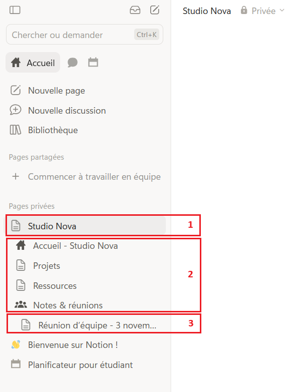
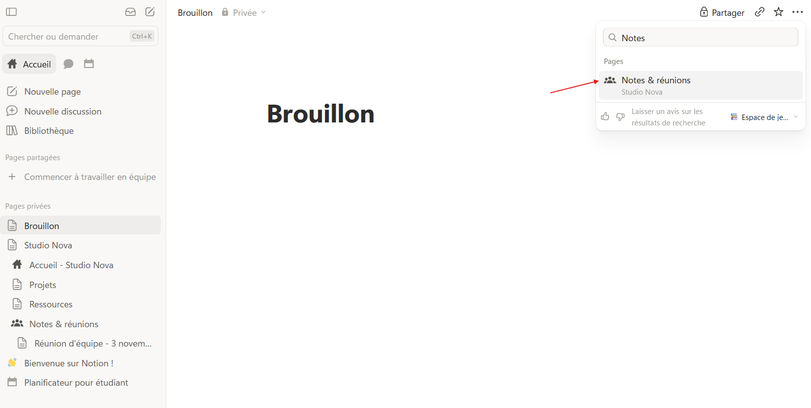
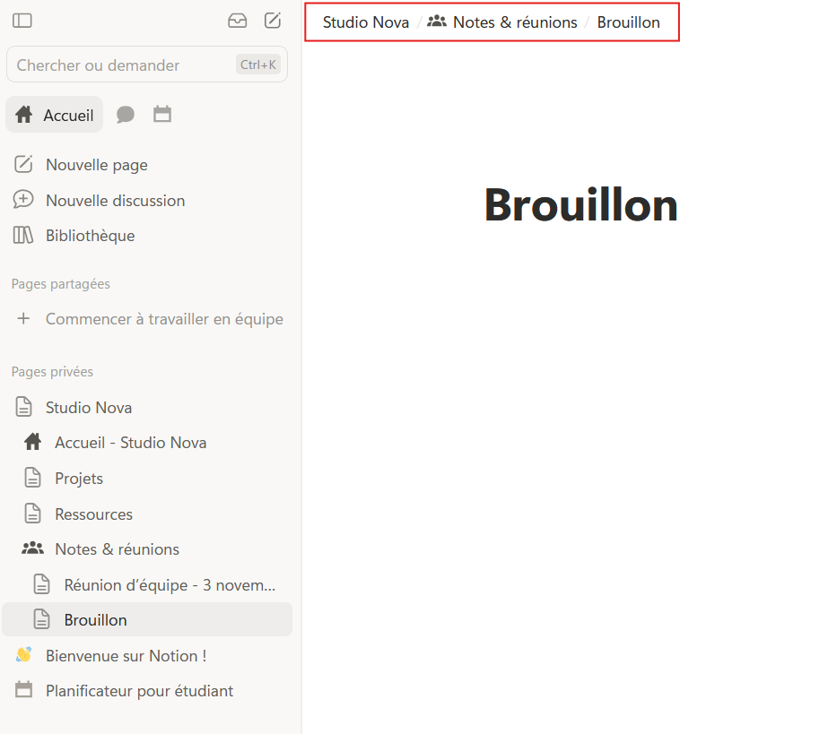

L'arborescence
Étape 1 : comprendre
Au module 2, tu as rangé « Accueil », « Projets » et « Ressources » à l'intérieur de « Studio Nova ». Sans le savoir, tu as commencé une arborescence.
Une arborescence, c'est la façon dont les pages sont rangées les unes dans les autres, comme les branches d'un arbre. Pense aux dossiers de ton ordinateur : un dossier « Clients » contient un dossier par client, qui contient lui-même des documents. Dans Notion, c'est pareil, sauf que chaque « dossier » est aussi une page qu'on peut remplir.
Deux mots reviennent souvent :
- la page parente : celle qui contient d'autres pages. « Studio Nova » est la page parente de « Projets » ;
- la sous-page (ou page enfant) : celle qui est rangée dedans.
Une page peut changer de place à tout moment. Pour la déplacer, tu peux la glisser dans la barre latérale sur une autre page, ou ouvrir le menu ··· en haut à droite de la page et choisir « Déplacer vers » (Move to). Le contenu suit : rien n'est perdu.

L'arborescence est le rangement des pages les unes dans les autres : une page parente contient des sous-pages.
Astuce : vise trois niveaux au maximum. Au-delà, on oublie où sont les choses. Si une page est très loin dans l'arbre, c'est souvent qu'il faut simplifier.
Créer « Notes & réunions » et déplacer une page
- Ouvre ta page « Studio Nova ». En bas de la page, tape « /page » et appuie sur Enter.
- Nomme la nouvelle page « Notes & réunions » et donne-lui une icône de ton choix.
- Dans « Notes & réunions », crée une sous-page « Réunion d'équipe — 3 novembre ». Écris-y une ligne : « Ordre du jour : point sur le site Orion ».
- Revenue dans la barre latérale, déplie « Studio Nova » puis « Notes & réunions » : ta réunion apparaît au troisième niveau.

- Pour t'entraîner à déplacer : crée une page « Brouillon » directement dans « Pages privées ». Ouvre-la, clique sur ··· en haut à droite, puis sur « Déplacer vers » (Move to).
- Tape « Notes » et choisis « Notes & réunions ». La page « Brouillon » s'y range.


Attention : dans la barre latérale, quand tu glisses une page, regarde bien le repère bleu. Une ligne bleue range la page entre deux pages ; une page surlignée en bleu la range dedans. Si tu te trompes, Ctrl + Z (Cmd + Z sur Mac) annule.
Exercice · dans Notion
La partie « Notes & réunions »
- Crée la sous-page « Notes & réunions » dans « Studio Nova ».
- Ajoute-y une sous-page « Réunion d'équipe — 3 novembre ».
- Crée une page « Brouillon » dans « Pages privées », puis déplace-la dans « Notes & réunions » avec « Déplacer vers ».
Résultat attendu : sous « Studio Nova », la barre latérale montre quatre pages : Accueil, Projets, Ressources et Notes & réunions. « Notes & réunions » contient deux pages : la réunion du 3 novembre et « Brouillon ». Tu peux supprimer « Brouillon » ensuite.
Étape 3 : vérifier
Objectif de la leçon
Tu sais maintenant ranger tes pages les unes dans les autres et déplacer une page sans rien perdre.
Choisis une réponse avant de valider.
Une page parente qui regroupe toutes les réunions rend leur place évidente. Une seule longue page deviendrait illisible, et les majuscules n'aident pas à ranger.
Choisis une réponse avant de valider.
Déplacer une page change seulement sa place dans l'arborescence. Son titre, son contenu et ses sous-pages la suivent.